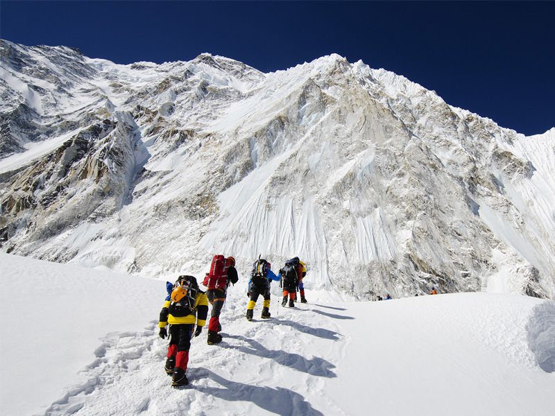
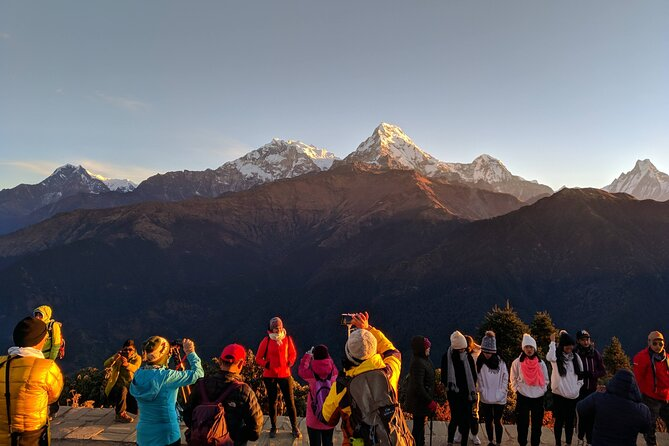
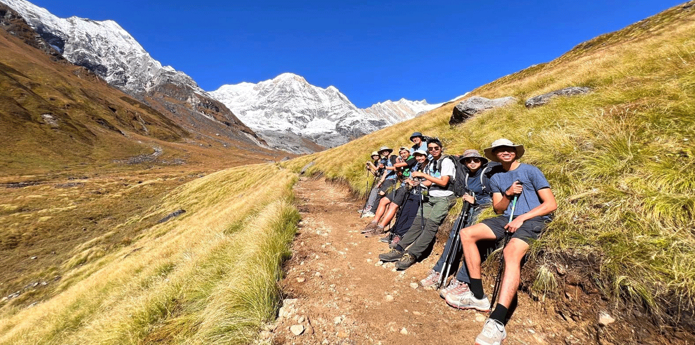

 Nepal is one of the most popular trekking destinations in the world, offering routes like the Everest Base Camp trek, Annapurna Circuit, Langtang Valley, and Manaslu Circuit. Each trek varies in difficulty, duration, and altitude, catering to both beginners and experienced trekkers. Trekking in Nepal is not just about reaching a destination—it’s about the journey itself, where travelers encounter stunning landscapes, ancient monasteries, and vibrant local communities.Nepal is a trekker’s paradise, offering some of the most breathtaking trails in the world. Whether you're looking for a challenging high-altitude trek or a scenic cultural journey, Nepal has something for every adventurer.
Everest trek
 Your trek likely involved traversing rugged trails, crossing suspension bridges, and witnessing stunning sunrises over snow-capped peaks. The camaraderie among fellow trekkers, the warmth of local hospitality, and the peaceful solitude of the mountains all contribute to making trekking a deeply fulfilling experience. Whether it was the thrill of reaching a high-altitude pass, the serenity of a quiet mountain village, or the satisfaction of pushing your limits, every moment added to the adventure.Nepal is a trekker’s paradise, offering some of the most breathtaking trails in the world. Whether you're looking for a challenging high-altitude trek or a scenic cultural journey.
Pokhara trek
Nepal is a trekker’s paradise, offering some of the most breathtaking trails in the world. Whether you're looking for a challenging high-altitude trek or a scenic cultural journey, Nepal has something for every adventurer. The country is home to iconic trekking routes like the Everest Base Camp Trek, where you can witness the world’s highest peak up close, and the Annapurna Circuit, known for its diverse landscapes ranging from lush forests to arid mountain deserts. Other popular treks include the Langtang Valley Trek, Manaslu Circuit Trek, and the Upper Mustang Trek, each offering unique experiences with stunning Himalayan views, rich cultural encounters, and thrilling adventures.
Annapurna Trek

Annapurna trek Everest trek Langtang trek Pokhara trek